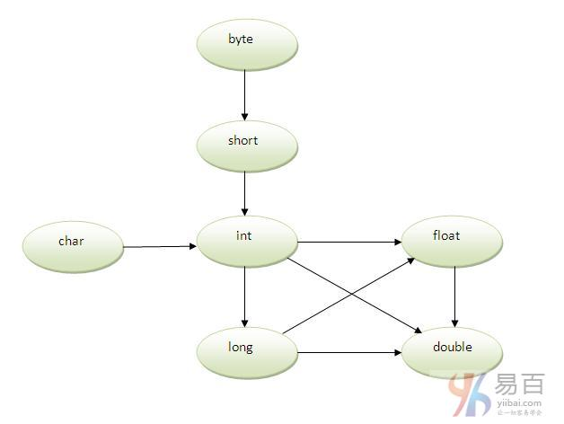

☰ 目录
27_方法重载
方法重载居然和类型提升有关
Java中，整型一般到 int ,
其它所有类型都可以到 double
在模糊的情况下使用类型提升来实现方法重载的示例
如果在方法中没有匹配的类型参数，并且每个方法都会提升相同数量的参数，那么会出现歧义。如下示例代码，将会产生编译时错误。
注意： 只有一种类型不被隐式地去提升，例如double不能被隐含地提升到任何类型。
如果一个类中有多个具有相同名称但参数不同的方法，则称为方法重载。如果只需要执行一个操作，具有相同的方法名称将增加程序的可读性。
假设必须执行给定数值的添加操作(求和)，但是参数的数量不固定，如果为两个参数编写add1(int，int)方法，为三个参数编写add2(int，int，int)方法，可能对其他程序员来说很难理解这样的方法的行为，因为它的名称不同。
因此，执行方法重载能比较容易理解程序含义。
方法重载的优点
重载方法不同的方式
在java中重载方法有两种方式，它们分别是：
注意：在java中，只通过更改方法的返回类型来实现方法重载是不可以的。
1. 方法重载： 修改参数的数量
在这个例子中，我们将创建了两个方法，第一个add()方法执行两个数值的相加操作，第二个add()方法执行三个数值的相加操作。
在这个例子中，我们创建静态方法，所以不需要创建实例来调用方法。
class Adder {
static int add(int a, int b) {
return a + b;
}
static int add(int a, int b, int c) {
return a + b + c;
}
}
class TestOverloading1 {
public static void main(String[] args) {
System.out.println(Adder.add(11, 11));
System.out.println(Adder.add(11, 11, 11));
}
}
上面代码执行后，输出结果如下 -
22
33
2. 方法重载：更改参数的数据类型
在这个例子中，创建了两种数据类型不同的方法。 第一个add方法接收两个整数参数，第二个add方法接收两个双精度型参数。
class Adder {
static int add(int a, int b) {
return a + b;
}
static double add(double a, double b) {
return a + b;
}
}
class TestOverloading2 {
public static void main(String[] args) {
System.out.println(Adder.add(11, 11));
System.out.println(Adder.add(12.3, 12.6));
}
}
上面代码执行后，输出结果如下 -
22
24.9
问题：为什么方法重载不能通过更改方法的返回类型？
在java中，只通过改变方法的返回类型来实现方法重载是不可能的，因为这样具有模糊性。 让我们来看看模糊性是怎么样发生的：
class Adder {
static int add(int a, int b) {
return a + b;
}
static double add(int a, int b) {
return a + b;
}
}
class TestOverloading3 {
public static void main(String[] args) {
System.out.println(Adder.add(11, 11));// ambiguity
}
}
上面代码执行后，输出结果如下 -
Compile Time Error: method add(int,int) is already defined in class Adder
System.out.println(Adder.add(11,11));//这里，java如何确定应该调用哪个sum()方法？
注意：编译时错误优于运行时错误。 所以，如果你声明相同的方法具有相同的参数，java编译器渲染编译器时间错误。
可以重载java main()方法吗？
这是完全可以的。 可以通过方法重载在类中有任意数量的main方法。 但是JVM调用main()方法，它只接收字符串数组作为参数。 让我们来看一个简单的例子：
class TestOverloading4{
public static void main(String[] args){System.out.println("main with String[]");}
public static void main(String args){System.out.println("main with String");}
public static void main(){System.out.println("main without args");}
}
上面代码执行后，输出结果如下 -
main with String[]
3.方法重载和类型提升
如果没有找到匹配的数据类型，那么会隐式地将一个类型提升到另一个类型。 让我们通过下面的图示来理解这个概念：

如上图所示，byte可以被提升为short，int，long，float或double。 short数据类型可以提升为int，long，float或double。 char数据类型可以提升为int，long，float或double等等。
使用类型提升方法重载的示例
class OverloadingCalculation1 {
void sum(int a, long b) {
System.out.println(a + b);
}
void sum(int a, int b, int c) {
System.out.println(a + b + c);
}
public static void main(String args[]) {
OverloadingCalculation1 obj = new OverloadingCalculation1();
obj.sum(20, 20);// now second int literal will be promoted to long
obj.sum(20, 20, 20);
}
}
上面代码执行后，输出结果如下 -
40
60
如果找到匹配使用类型提升方法重载示例
如果方法中存在匹配类型参数，则不会执行类型提升方法重载。
class OverloadingCalculation2 {
void sum(int a, int b) {
System.out.println("int arg method invoked");
}
void sum(long a, long b) {
System.out.println("long arg method invoked");
}
public static void main(String args[]) {
OverloadingCalculation2 obj = new OverloadingCalculation2();
obj.sum(20, 20);// now int arg sum() method gets invoked
}
}
上面代码执行后，输出结果如下 -
Output:int arg method invoked
在模糊的情况下使用类型提升来实现方法重载的示例
如果在方法中没有匹配的类型参数，并且每个方法都会提升相同数量的参数，那么会出现歧义。如下示例代码，将会产生编译时错误。
class OverloadingCalculation3 {
void sum(int a, long b) {
System.out.println("a method invoked");
}
void sum(long a, int b) {
System.out.println("b method invoked");
}
public static void main(String args[]) {
OverloadingCalculation3 obj = new OverloadingCalculation3();
obj.sum(20, 20);// now ambiguity
}
}
注意： 只有一种类型不被隐式地去提升，例如double不能被隐含地提升到任何类型。